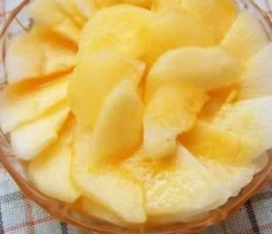
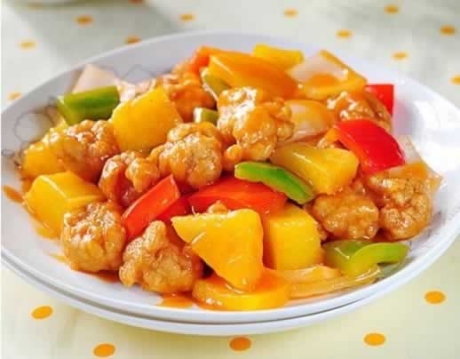

五步教准妈妈作水果饮
怀孕期间，准妈妈可以把买来的水果做成简单可口的水果餐，既能补充多种维生素与微量元素，还能提高妈妈们的食欲，漂亮的水果餐更能让妈妈们的心情好起来哦。现在就来试一试自制水果饮吧，五步简单做成：
第一步：去掉水果的外皮。
第二步：去掉果核（例如，苹果核、西瓜子等）。
第三步：将果肉切成小块状，同时去掉靠近果核处的酸果肉。
第四步：用榨汁机将果肉块榨成果汁。（水果少的水果将成果泥状）
第五步：在第一时间喝上一口新鲜的果汁或果泥，也可以混合喜欢的果仁或酸奶一起食用。
本周推荐尝试菜谱1：
橙汁雪梨
推荐理由：橙汁雪梨做法简单，可以帮助准妈妈润燥清热与润肺。
食谱原料：
早酥梨2个、果珍、矿泉水适量。
制作方法：
先将梨去皮去核，切片摆盘，舀出2~3勺果珍，并用少量的水化开，要浓一点。浇在摆好的梨片上，放入冰箱冻一下，30分钟后取出，即可。
本周推荐尝试菜谱2：
菠萝咕噜肉